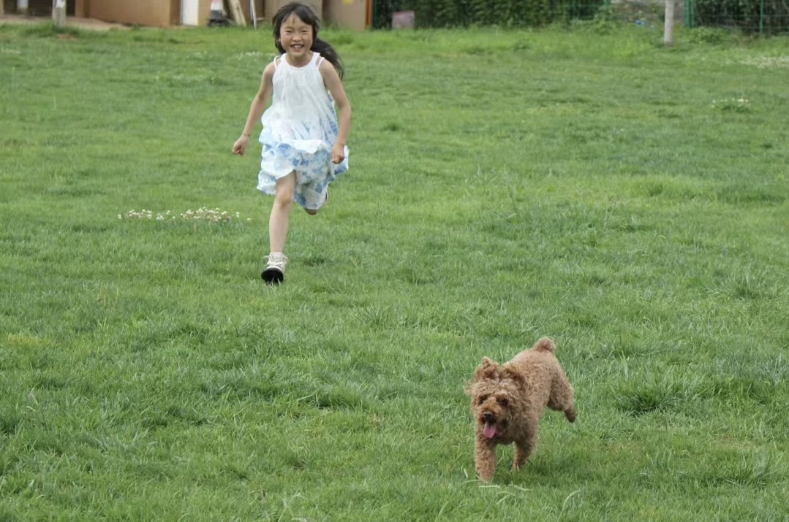

Sihan Wu (Sabrina)
Camp Counselor • Outdoor Enthusiast • CS Major
ENFP(Extraverted · Intuitive · Feeling · Perceiving)
Child-friendly
Coachable
Sports & Outdoor Enthusiast
Photography & Music
Independent traveler(30+ cities)
About Me
Computer Science student from Xiangtan University with an Emergency Management minor, but my real classroom has been the outdoors. I’ve spent two summers as a camp counselor and logged solo ascents on seven 5,000m+ mountains. I’m an ENFP who loves leading small groups, bringing energy to a rainy day, and noticing the quiet kid in the back. I combine outdoor survival skills, youth counseling experience, and a love for photography and music to help campers grow.
Outdoor & Skills
Wilderness Experience
- Solo High-Altitude Climbing: 7x 5,000m+ mountains (Daocheng Yading long route in heavy rain).
- Solo Travel: 20+ cities, practicing planning and risk management.
- Camper Experience: Art, adventure, and foam-blaster camps—I know what it's like to be the new kid.
Practical Skills
- Youth Leadership: Emotional cue reading, conflict de-escalation.
- Media & Arts: Photography (Canon 60D), arts & crafts, beginner music.
- Certifications: CPR/AED certified; willing to complete Wilderness First Aid.
- Physical: Able to lift 40 lbs of gear.
Camp & Youth Leadership
Camp Counselor Summer 2026
[Nonprofit Rural Childcare Camp] — Kunming, China
- Served as a consistent, caring adult for left-behind children, many of whom hadn't seen their parents in years.
- Read emotional cues and adjusted my approach for campers who withdrew or went quiet; prioritized the person over the schedule.
- Built a predictable, safe group environment through simpl rituals: check-ins, small jobs, and naming small wins out loud.
- Handled conflict by listening first, separating the schedule from the person, and getting the team on the same page quickly.
Counselor Summer 2025
[Community Outdoor Exploration Camp] — Kunming, China
- Led daily hands-on experiments (plastic bottle cars, pinhole cameras) and beginner music (tongue drum, ukulele, piano).
- Turned failed builds into "why didn't it work?" challenges, helping campers debug and try again rather than rescuing them.
- Progressed groups through "exploration maps": park hikes → climbing wall → low-elevation mountain hikes → camping.
- Managed gear checks, group pacing, weather awareness, and stayed calm when plans changed.
Photography Portfolio
A collection of candid moments — ^o^from genuine smiles of children to atmospheric landscapes. (Hover to pause)


